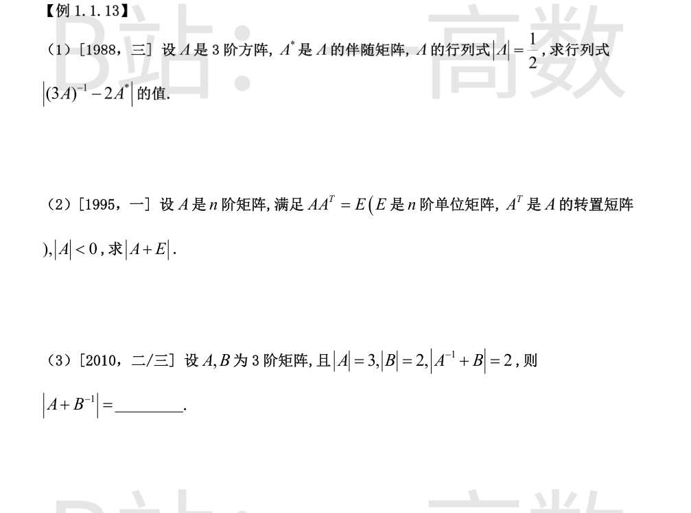
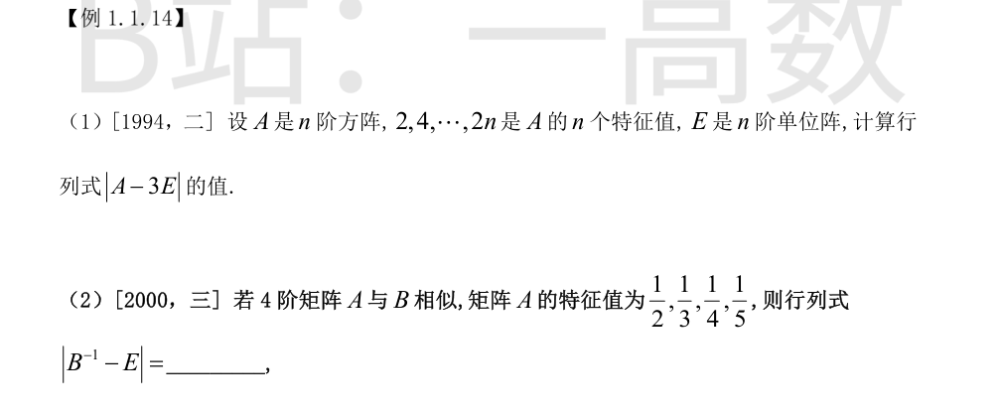
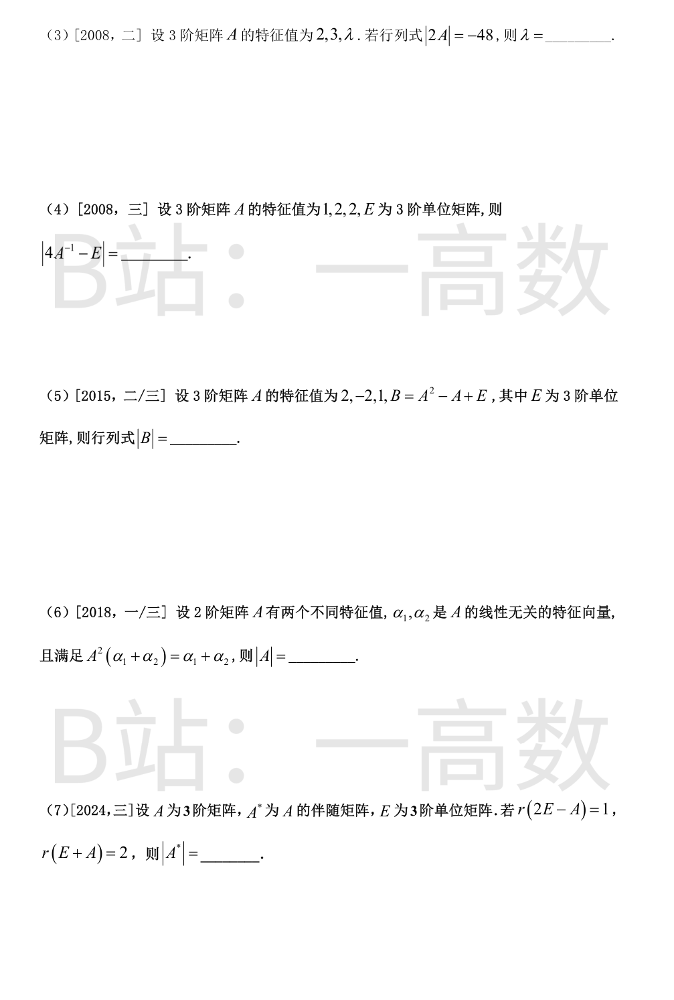
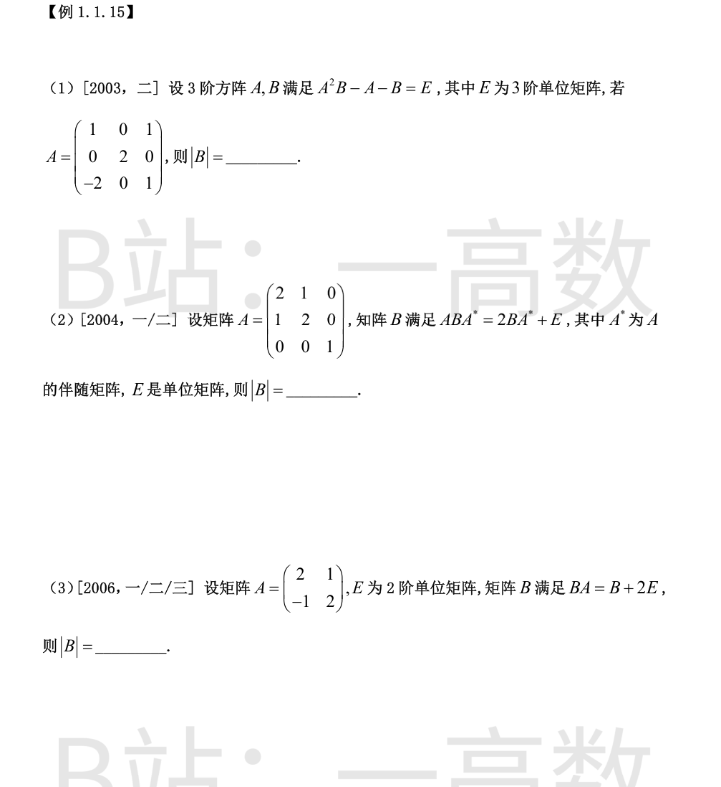

(3A)^{-1} = (1/3)A^{-1}；A* = |A|A^{-1} = (1/2)A^{-1}。
$$(3A)^{-1}-2A^{*}=\frac13 A^{-1}-2\cdot\frac12 A^{-1}=-\frac23 A^{-1}.$$
取行列式：
$$\Big|-\tfrac23 A^{-1}\Big|=\Big(-\tfrac23\Big)^3|A^{-1}|=-\frac{8}{27}\cdot\frac{1}{|A|}=-\frac{8}{27}\cdot 2=-\frac{16}{27}.$$
故 |(3A)^{−1} − 2A*| = −16/27。
利用 AA^T = E 把 A+E 提取公因子 A：
$$A+E=AA^T+A=A(A^T+E).$$
取行列式：
$$|A+E|=|A|\cdot|A^T+E|=|A|\cdot|(A+E)^T|=|A|\,|A+E|.$$
于是 (1−|A|)|A+E| = 0。由 |A| < 0 知 |A| ≠ 1，故 |A+E| = 0。
构造公因子：
$$A+B^{-1}=A(A^{-1}+B)B^{-1}.$$
（验证：A·A^{-1}·B^{-1} + A·B·B^{-1} = B^{-1} + A，正确。）
取行列式：
$$|A+B^{-1}|=|A|\cdot|A^{-1}+B|\cdot|B^{-1}|=3\times 2\times\frac{1}{2}=3.$$


A − 3E 的特征值为 2−3, 4−3, …, 2n−3，即
$$-1,\ 1,\ 3,\ 5,\ \dots,\ 2n-3.$$
矩阵的行列式等于其全部特征值之积：
$$|A-3E|=(-1)\cdot 1\cdot 3\cdot 5\cdots(2n-3)=-(2n-3)!!.$$
相似矩阵有相同特征值，故 B 的特征值为 1/2, 1/3, 1/4, 1/5。
B 可逆（无零特征值），B^{−1} 的特征值为倒数：2, 3, 4, 5。
B^{−1} − E 的特征值为 2−1, 3−1, 4−1, 5−1，即 1, 2, 3, 4。
$$|B^{-1}-E|=1\cdot 2\cdot 3\cdot 4=24.$$
|A| = 2·3·λ = 6λ（特征值之积）。
$$|2A|=2^3|A|=8\cdot 6\lambda=48\lambda=-48 \Rightarrow \lambda=-1.$$
A 可逆，A^{−1} 的特征值为 1, 1/2, 1/2；4A^{−1} − E 的特征值为
$$4\cdot 1-1=3,\quad 4\cdot\tfrac12-1=1,\quad 4\cdot\tfrac12-1=1.$$
故 |4A^{−1} − E| = 3×1×1 = 3。
A 的特征向量对应的 B = f(A)（f(x) = x^2 − x + 1）的特征值为 f(λ)：
- λ = 2：f(2) = 4 − 2 + 1 = 3；
- λ = −2：f(−2) = 4 + 2 + 1 = 7；
- λ = 1：f(1) = 1 − 1 + 1 = 1。
$$|B|=3\times 7\times 1=21.$$
设 Aα_i = λ_iα_i（i = 1, 2）。则
$$A^2(\alpha_1+\alpha_2)=\lambda_1^2\alpha_1+\lambda_2^2\alpha_2=\alpha_1+\alpha_2.$$
由 α₁, α₂ 线性无关，比较系数得 λ_1^2 = 1，λ_2^2 = 1，即每个特征值为 ±1。
又 A 有两个不同特征值，故 {λ₁, λ₂} = {1, −1}，于是
$$|A|=\lambda_1\lambda_2=-1.$$
r(2E − A) = 1 ⇒ (2E − A)x = 0 有 2 个线性无关解 ⇒ λ = 2 是特征值且几何重数为 2 ⇒ 代数重数 ≥ 2。
r(E + A) = 2 < 3 ⇒ |E + A| = 0 ⇒ λ = −1 是特征值（几何重数 1，代数重数 ≥ 1）。
三个特征值（计重数）共 3 个，故恰为 2, 2, −1，于是
$$|A| = 2\cdot 2\cdot(-1) = -4.$$
3 阶方阵伴随矩阵的行列式 |A*| = |A|^{n−1} = |A|^2 = (−4)^2 = 16。

整理：A^2B − A − B = E ⇒ (A^2 − E)B = A + E，即 (A−E)(A+E)B = A+E。
计算 |A|（按第 2 列展开）：|A| = 2·det[[1, 1], [−2, 1]] = 2·(1+2) = 6。
A + E = [[2,0,1],[0,3,0],[−2,0,2]]，按第 2 列展开：|A+E| = 3·det[[2,1],[−2,2]] = 3·6 = 18 ≠ 0，可约去。
两边取行列式：|A−E|·|A+E|·|B| = |A+E|，故 |B| = 1/|A−E|。
A − E = [[0,0,1],[0,1,0],[−2,0,0]]，按第 1 行展开：|A−E| = 1·det[[0,1],[−2,0]] = 1·(0+2) = 2。
故 |B| = 1/2。
移项合并：ABA* − 2BA* = E ⇒ (A − 2E)BA* = E。
故 B = (A−2E)^{−1}(A*)^{−1}，取行列式：
$$|B|=\frac{1}{|A-2E|\cdot|A^*|}.$$
|A| = (2·2 − 1·1)·1 = 3，故 |A*| = |A|^{3−1} = |A|^2 = 9。
A − 2E = [[0,1,0],[1,0,0],[0,0,−1]]，按第 3 行展开：|A−2E| = (−1)·det[[0,1],[1,0]] = (−1)·(−1) = 1。
$$|B|=\frac{1}{1\times 9}=\frac{1}{9}.$$
整理：BA − B = 2E ⇒ B(A − E) = 2E。
取行列式：|B|·|A − E| = |2E| = 2^2 = 4。
A − E = [[1,1],[−1,1]]，|A − E| = 1·1 − 1·(−1) = 2。
故 |B| = 4/2 = 2。